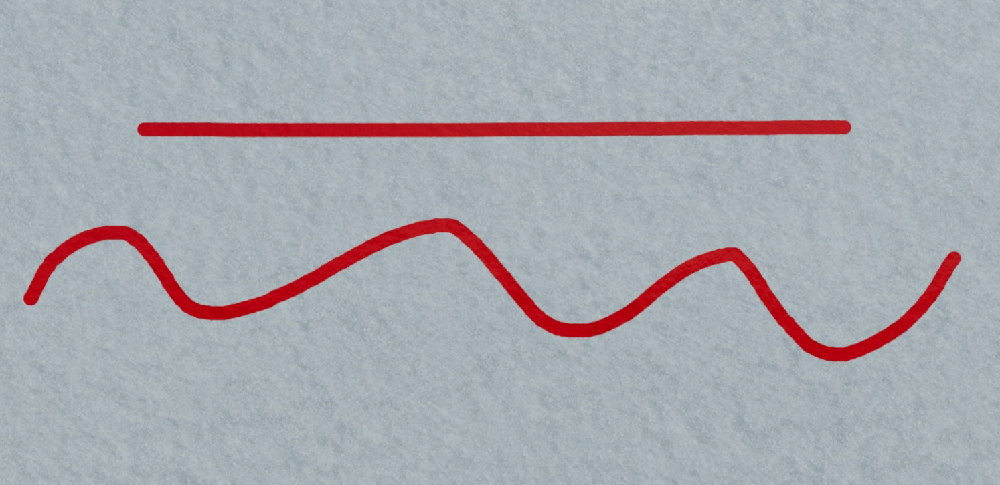

# 黑板效果
在 Unity 中实现黑板的基本功能，包括画线和擦除。
由于 Unity 有更新间隔再加上输入设备也有回报率，我们能获得的只有移动轨迹中的离散点。画线的基本思想就是将这些离散的点连成一条线。连线的方法有很多种，其中最简单的做法就是将每帧获得的点与上一帧获得的点连成直线。最后再加上简单的边缘平滑就可以做到画线的效果了。
技术上使用 CSharp + RenderTexture + ComputeShader
# 代码
# 使用 Compute Shader 计算像素并画线
- 边缘平滑使用 smoothstep
- 用线性插值实现颜色平滑过度
- 这一帧的终点就是下一帧的起点，这会使线段中间那些点进行两次线性插值，从而出现凸起。为了消除这个凸起，可以在中间点进行线性插值时降低边缘平滑的长度
#pragma kernel CSMain | |
// 目标 RT | |
RWTexture2D<float4> _DrawingTex; | |
// 原贴图 RT | |
RWTexture2D<float4> _SourceTex; | |
// 局部更新的偏移量 | |
uint2 _Offset; | |
// 前二帧的坐标 | |
float2 _StartUV; | |
// 这一帧的坐标 | |
float2 _EndUV; | |
// 笔触半径 | |
float _BrushRadius; | |
// 笔触颜色 | |
float4 _BrushColor; | |
// 边缘平滑 | |
float _EdgeSoftness; | |
// 是否为擦除模式 | |
bool _IsEraser; | |
// 简单的边缘平滑 | |
float capsuleAA(float2 p, float2 a, float2 b) | |
{ | |
float2 ap = p - a; | |
float2 ab = b - a; | |
// 计算投影比例 | |
float h = saturate(dot(ap, ab) / dot(ab, ab)); | |
// 计算点到线段的最短距离 | |
float d = length(ap - ab * h); | |
// smoothstep(min, max, x) | |
//x < min 时 返回 0 | |
//x > max 时 返回 1 | |
//x 处于 [min, max] 时，返回 0 到 1 的平滑过渡 | |
float aa; | |
if (length(ap) < _BrushRadius + _EdgeSoftness) | |
{ | |
aa = 1 - smoothstep(_BrushRadius, _BrushRadius + _EdgeSoftness * 0.6, d); | |
} | |
else | |
{ | |
aa = 1 - smoothstep(_BrushRadius, _BrushRadius + _EdgeSoftness, d); | |
aa = aa * aa; | |
} | |
return aa; | |
} | |
// 着色 | |
void Draw(uint2 pixelPos, float aa) | |
{ | |
if (_IsEraser) | |
{ | |
_DrawingTex[pixelPos] = lerp(_DrawingTex[pixelPos], _SourceTex[pixelPos], aa); | |
} | |
else | |
{ | |
_DrawingTex[pixelPos] = lerp(_DrawingTex[pixelPos], _BrushColor, aa); | |
} | |
} | |
[numthreads(8, 8, 1)] | |
void CSMain(uint3 id : SV_DispatchThreadID) | |
{ | |
uint2 pixelPos = id.xy + _Offset; | |
uint width, height; | |
_DrawingTex.GetDimensions(width, height); | |
// 防止溢出贴图范围 | |
if (pixelPos.x >= width || pixelPos.y >= height) | |
{ | |
return; | |
} | |
float2 p = float2(pixelPos); | |
float2 a = _StartUV * float2(width, height); | |
float2 b = _EndUV * float2(width, height); | |
float aa = capsuleAA(p, a, b); | |
Draw(pixelPos, aa); | |
} |
# CSharp 实现参数传递
- 创建 RenderTexture 贴图
- 计算包围盒：仅更新线段周围的像素，这样可以降低性能消耗
using System; | |
using UnityEngine; | |
namespace Default | |
{ | |
/// <summary> | |
/// BlackboardWriterCS | |
/// </summary> | |
public class BlackboardWriter : MonoBehaviour | |
{ | |
[Tooltip("计算着色器")] | |
public ComputeShader blackboardCompute; | |
[Tooltip("材质")] | |
public Material blackboardMaterial; | |
[Tooltip("RT 大小")] | |
public int textureSize = 2048; | |
[Tooltip("笔刷颜色")] | |
public Color brushColor = Color.white; | |
[Tooltip("笔刷大小")] | |
public float brushRadius = 10; | |
[Tooltip("橡皮大小")] | |
public float eraserRadius = 30; | |
[Tooltip("边缘平滑")] | |
public float edgeSoftness = 4; | |
private Texture sourceMap; | |
private RenderTexture drawingRT; | |
private RenderTexture sourceRT; | |
private int kernelIndex; | |
private Vector2 startUV; | |
private bool isFirstFrame = true; | |
private void Start() | |
{ | |
drawingRT = new RenderTexture | |
( | |
textureSize, | |
textureSize, | |
0, | |
RenderTextureFormat.ARGB32, | |
RenderTextureReadWrite.sRGB | |
); | |
drawingRT.filterMode = FilterMode.Point; | |
drawingRT.enableRandomWrite = true; | |
drawingRT.useMipMap = false; | |
drawingRT.autoGenerateMips = false; | |
drawingRT.Create(); | |
sourceRT = new RenderTexture | |
( | |
textureSize, | |
textureSize, | |
0, | |
RenderTextureFormat.ARGB32, | |
RenderTextureReadWrite.sRGB | |
); | |
sourceRT.filterMode = FilterMode.Point; | |
sourceRT.enableRandomWrite = true; | |
sourceRT.useMipMap = false; | |
sourceRT.autoGenerateMips = false; | |
sourceRT.Create(); | |
sourceMap = blackboardMaterial.GetTexture("_BaseMap"); | |
// 将源贴图内容复制到 RT | |
// Blit 会触发一次 GPU 绘制 | |
// Texture -> 采样 -> shader -> RenderTexture | |
Graphics.Blit(sourceMap, drawingRT); | |
// CopyTexture 会直接复制像素，有严格的格式限制 | |
// Texture -> 直接显存复制 -> Texture | |
Graphics.CopyTexture(drawingRT, sourceRT); | |
kernelIndex = blackboardCompute.FindKernel("CSMain"); | |
blackboardCompute.SetTexture(kernelIndex, "_DrawingTex", drawingRT); | |
blackboardCompute.SetTexture(kernelIndex, "_SourceTex", sourceRT); | |
blackboardMaterial.SetTexture("_BaseMap", drawingRT); | |
} | |
private void Update() | |
{ | |
// 左键画，右键擦除 | |
if (Input.GetMouseButton(0) || Input.GetMouseButton(1)) | |
{ | |
HandleInput(); | |
} | |
else if (Input.GetMouseButtonUp(0) || Input.GetMouseButtonUp(1)) | |
{ | |
isFirstFrame = true; | |
} | |
} | |
private void OnDestroy() | |
{ | |
blackboardMaterial.SetTexture("_BaseMap", sourceMap); | |
} | |
private void HandleInput() | |
{ | |
Ray ray = Camera.main.ScreenPointToRay(Input.mousePosition); | |
if (Physics.Raycast(ray, out RaycastHit hit)) | |
{ | |
if (hit.collider.gameObject == this.gameObject) | |
{ | |
Vector2 endUV = hit.textureCoord; | |
if (isFirstFrame) | |
{ | |
startUV = endUV; | |
isFirstFrame = false; | |
} | |
DrawArea(startUV, endUV); | |
this.startUV = endUV; | |
} | |
} | |
else | |
{ | |
isFirstFrame = true; | |
} | |
} | |
/// <summary> | |
/// DrawArea | |
/// </summary> | |
/// <param name="startUV"></param> | |
/// <param name="endUV"></param> | |
private void DrawArea(Vector2 startUV, Vector2 endUV) | |
{ | |
int texX = drawingRT.width; | |
int texY = drawingRT.height; | |
Vector2 a; | |
Vector2 b; | |
a.x = startUV.x * texX; | |
a.y = startUV.y * texY; | |
b.x = endUV.x * texX; | |
b.y = endUV.y * texY; | |
float offset; | |
if (Input.GetMouseButton(0)) | |
{ | |
offset = brushRadius + edgeSoftness + 1; | |
blackboardCompute.SetFloat("_BrushRadius", brushRadius); | |
blackboardCompute.SetBool("_IsEraser", false); | |
} | |
else | |
{ | |
offset = eraserRadius + edgeSoftness + 1; | |
blackboardCompute.SetFloat("_BrushRadius", eraserRadius); | |
blackboardCompute.SetBool("_IsEraser", true); | |
} | |
// 计算包围盒 | |
float minX = Mathf.Clamp(MathF.Min(a.x, b.x) - offset, 0, texX); | |
float minY = Mathf.Clamp(MathF.Min(a.y, b.y) - offset, 0, texY); | |
float maxX = Mathf.Clamp(MathF.Max(a.x, b.x) + offset, 0, texX); | |
float maxY = Mathf.Clamp(MathF.Max(a.y, b.y) + offset, 0, texY); | |
float rectWidth = maxX - minX; | |
float rectHeight = maxY - minY; | |
blackboardCompute.SetInts("_Offset", new int[] { (int)minX, (int)minY }); | |
blackboardCompute.SetVector("_StartUV", startUV); | |
blackboardCompute.SetVector("_EndUV", endUV); | |
blackboardCompute.SetVector("_BrushColor", brushColor); | |
blackboardCompute.SetFloat("_EdgeSoftness", edgeSoftness); | |
// 只需要覆盖 rectWidth * rectHeight 区域的线程组 | |
int groupsX = Mathf.CeilToInt(rectWidth / 8f); | |
int groupsY = Mathf.CeilToInt(rectHeight / 8f); | |
blackboardCompute.Dispatch(kernelIndex, groupsX, groupsY, 1); | |
} | |
} | |
} |
# 效果
- brushRadius = 10
- edgeSoftness = 4
